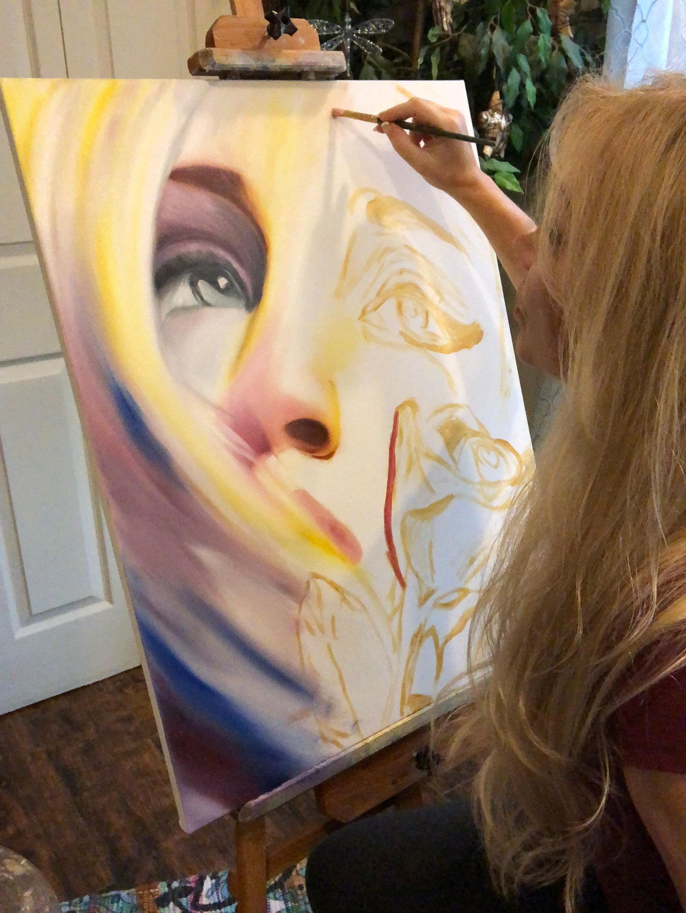

Hello, and welcome to my Art Studio.
I'm Gina Mielko (GV Mielko)
My work explores the tension between what is carnal and what is eternal.
Many of my pieces belong to thematic series. These ongoing visual conversations explore transcendence, grief, desire, love and devotion.
My painting style is narrative and emotive, often walking the line between realism and abstraction. I use layered brushwork and restrained palettes to evoke atmosphere, inviting viewers not just to look, but to feel.
I believe art should stir something that lies still inside of us.
